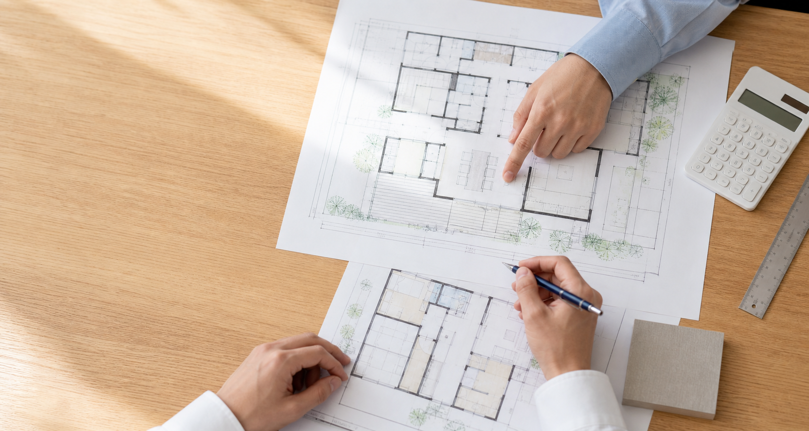

ホームインスペクション
売買前などに建物の状態を確認し、写真付き報告書にまとめます。
不動産・住宅事業者の方へ
不動産会社、管理会社、工務店などからの建物調査、既存住宅状況調査、写真、簡易図面、改修内容の確認をご相談いただけます。

対応を想定している業務
建物、地域、希望時期によって対応可否が異なります。まずは物件情報と目的をお知らせください。
売買前などに建物の状態を確認し、写真付き報告書にまとめます。
宅地建物取引で活用する調査について、建物と依頼目的を確認して対応します。
販売資料や検討資料に使用する写真について、必要な範囲を確認します。
現地と既存資料を確認し、必要な図面の内容をご相談いただけます。
改修範囲、工事項目、優先順位などを整理するための確認を行います。
対象地域、物件種別、依頼頻度などを確認したうえで対応方法をご案内します。
お問い合わせ時に必要な情報
資料がそろっていない場合も、現在分かっている内容から確認します。
料金（税込）
建物の規模、所在地、現地条件によって追加費用が生じる場合があります。
マンション55,000円、戸建住宅66,000円。
写真付き報告書を含みます。戸建住宅は延床40坪まで66,000円です。
ご依頼の流れ
物件情報と依頼目的をお知らせください。
図面や日程などを確認します。
対応範囲と料金を確認します。
決定した内容に沿って確認します。
報告書などをお渡しします。
請求方法、支払時期、納品形式、継続依頼の条件は、ご依頼内容を確認して個別にご案内します。
事業者向けお問い合わせ
対応可否、必要資料、日程、料金を確認してご案内します。